North End
Haley's first "furever" home was the North End (Boston, MA). She lived there with Alexa for two years before moving out to the suburbs.
Haley was a regular at many neighborhood bars, restaurants, and shops. Many locals loved to give her treats! Her favorite neighborhood spots were Polkadog Bakery, The Corner Cafe Bar, and CVS. Haley loved the attention!
Haley also enjoyed rogue slices of pizza, chicken wings, and cannolis that could often be found on the streets of the North End.
 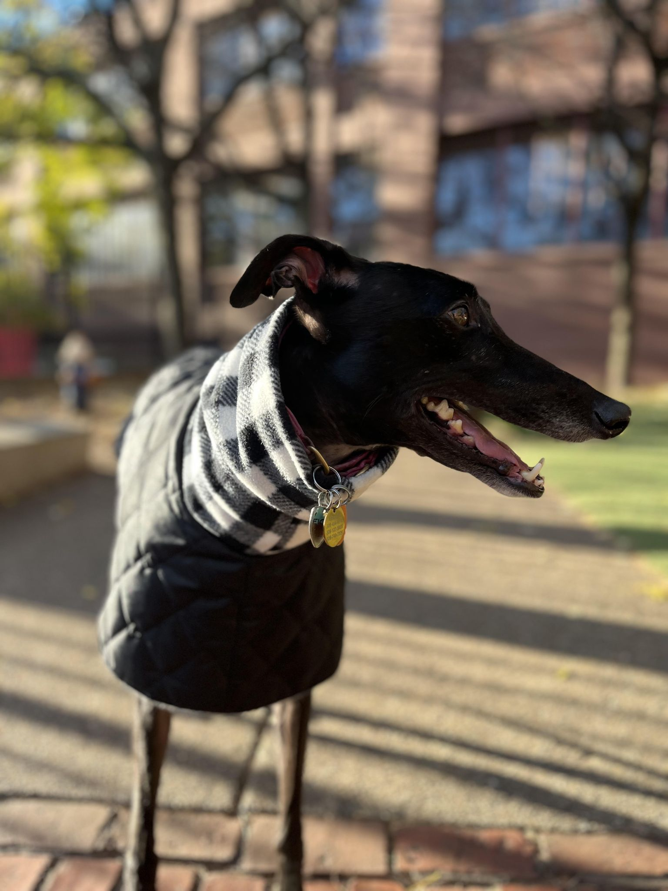
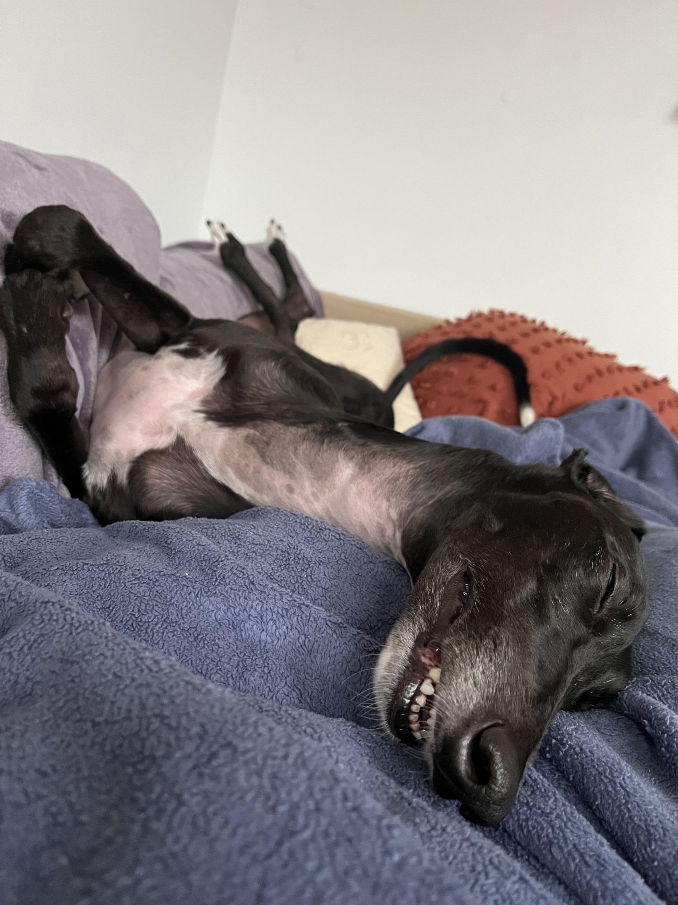
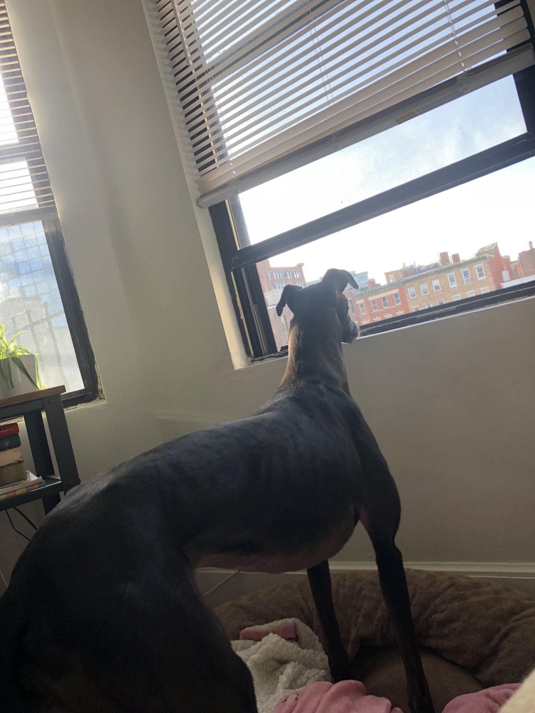
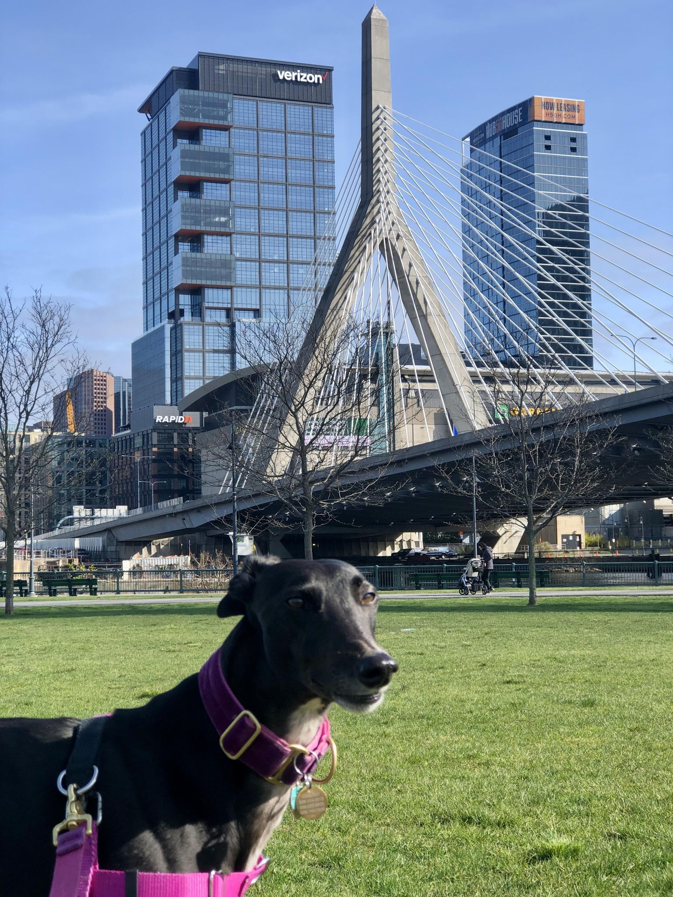
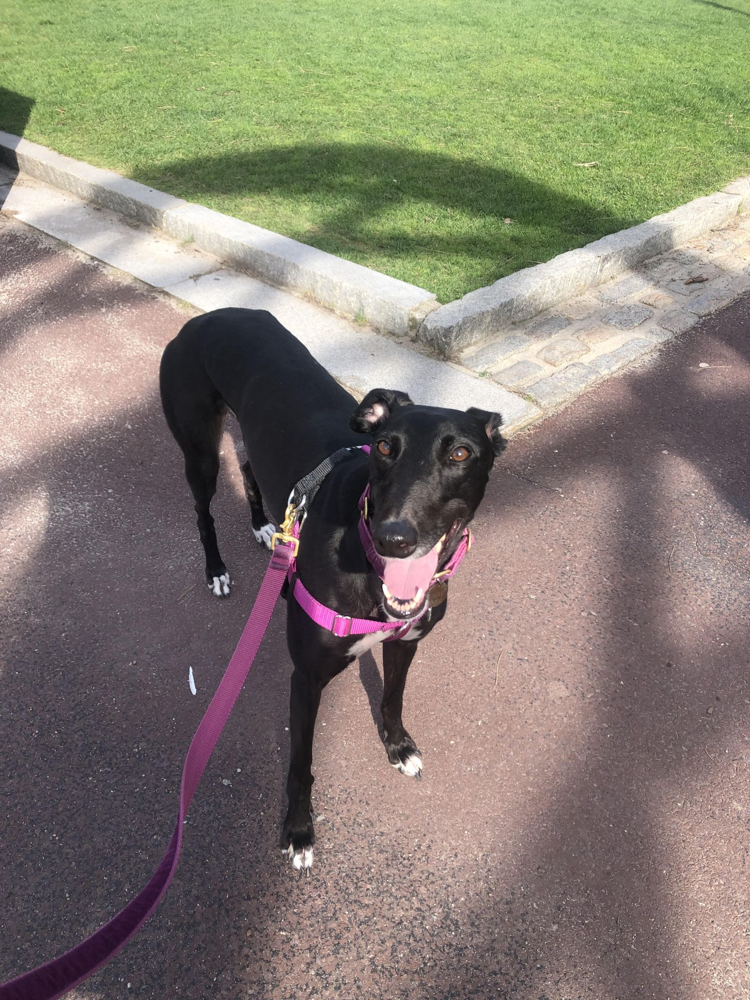
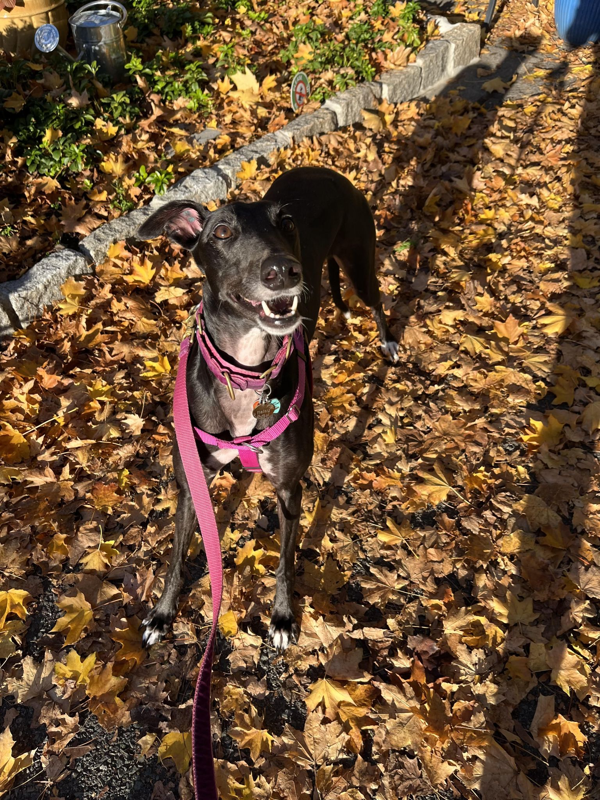
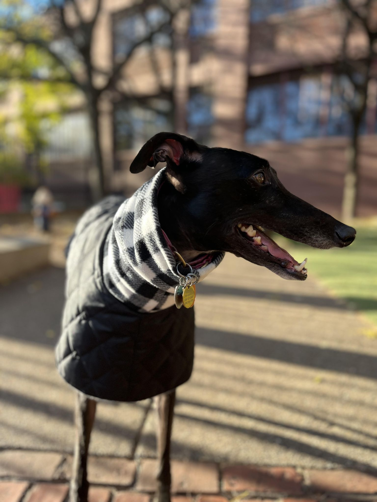
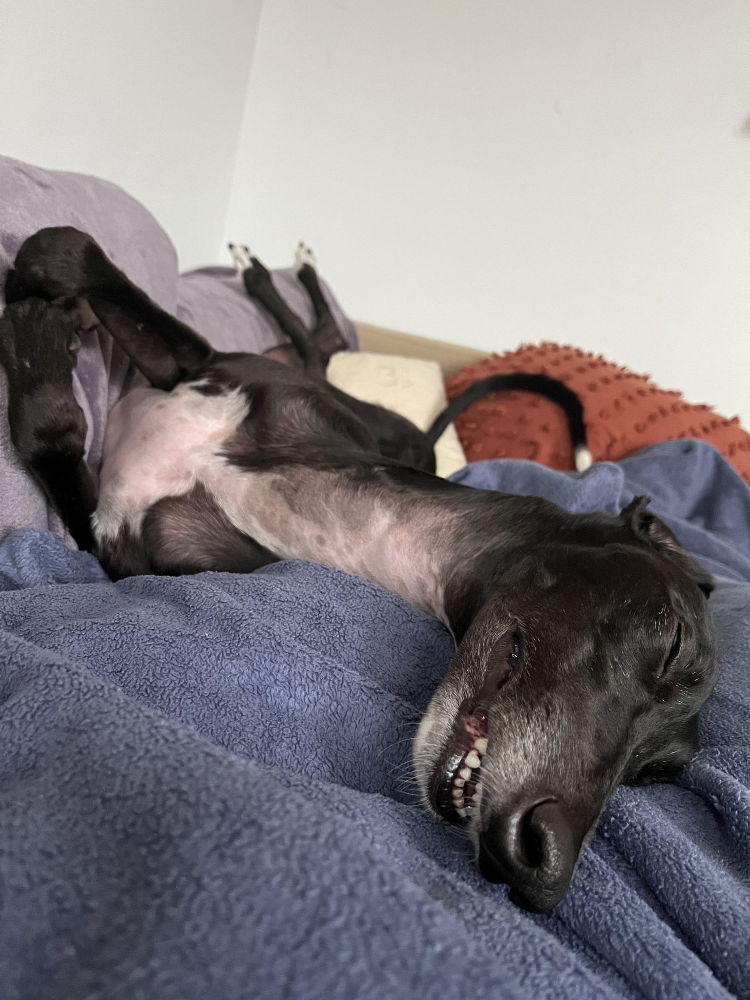
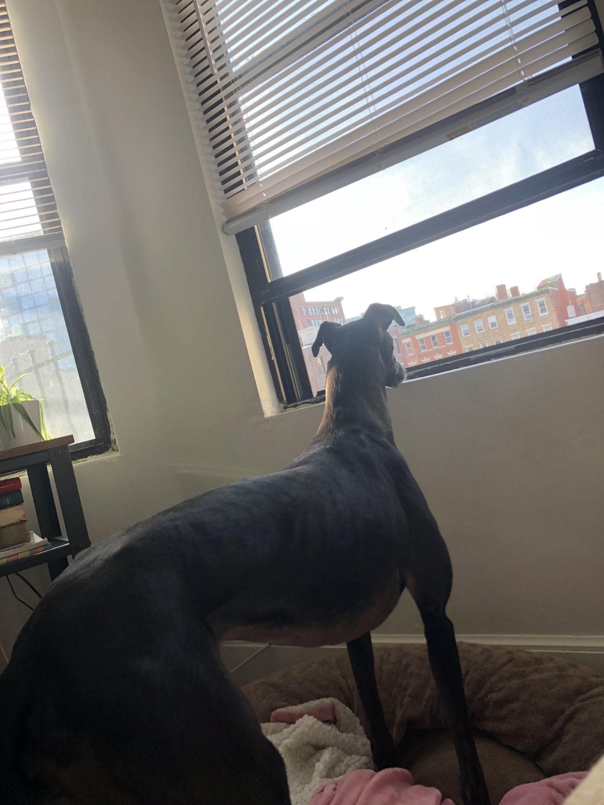
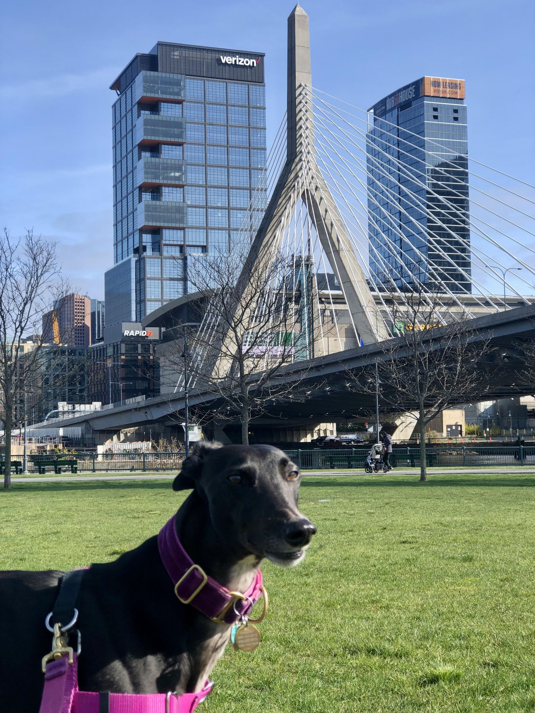
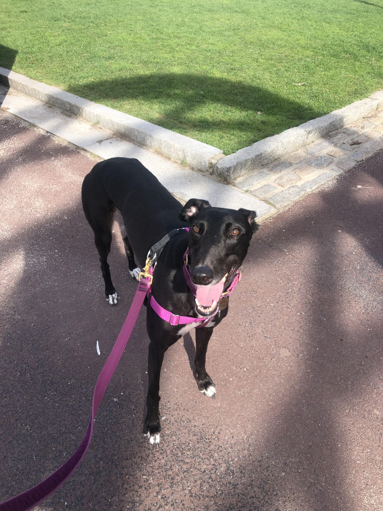
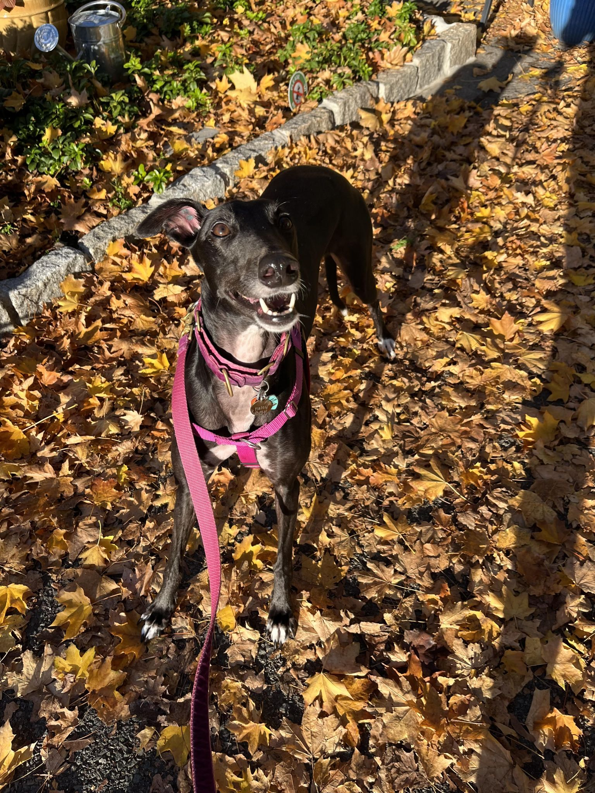